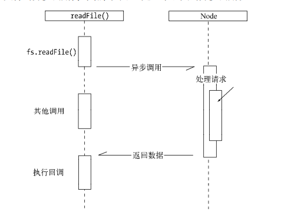
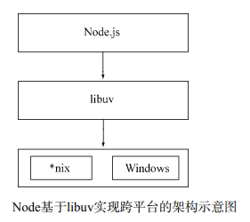
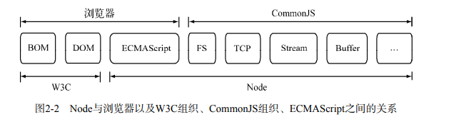
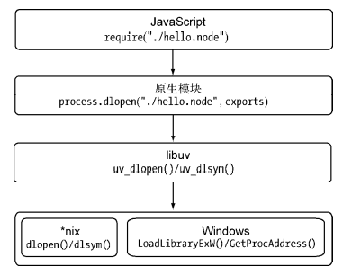
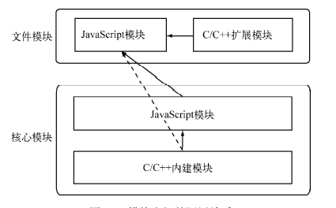
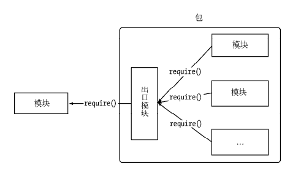

nodejs是什么
脚本语言需要一个解析器才能运行，JavaScript是脚本语言，在不同的位置有不一样的解析器，如写入html的js语言，浏览器是它的解析器角色。而对于需要独立运行的JS，nodejs就是一个解析器。
每一种解析器都是一个运行环境，不但允许js定义各种数据结构，进行各种计算，还允许js使用允许环境提供的内置对象和方法做一些事情。如运行在浏览器中的js的用途是操作DOM，浏览器就提供了document之类的内置对象。而运行在nodejs中的js的用途是操作磁盘文件或搭建http服务器，nodejs就相应提供了fs,http等内置对象。
nodejs的安装
直接从官网下载nodejs安装包，使用默认安装即可
安装完成后打开dos，输入 node -v，如果出现对应的版本信息，代表成功，如果安装失败，查看环境变量等设置是否正常，或者Google一下
注意
1、不同nodejs版本在使用上可能存在差异，需要根据自己实际情况，选择对应的版本安装（如果没有特别要求，一般使用标注的推荐版本进行安装即可）
2、安装时如无特殊需要，直接选择下一步，使用默认设置即可，环境变量会默认进行设置
3、新版的nodejs集成了npm，安装nodejs之后，可直接使用npm，打开dos，输入 npm -v，查看npm版本
根据不同的前端框架，使用不同的命令，安装对应的依赖、脚手架等，即可进行开发
nodejs官网地址：https://nodejs.org/zh-cn/docs/
nodejs中文文档地址：https://www.nodeapp.cn/documentation.html
node的特点
(1)异步I/O

在Node中，绝大多数的操作都以异步的方式进行调用
(2)事件与回调函数
(3)单线程
在Node中，JavaScript与其余线程是无法共享任何状态的。
单线程的最大好处是不用像多线程编程那样处处在意状态的同步问题，这里没有死锁的存在，也没有线程上下文交换所带来的性能上的开销。
单线程弱点
- 无法利用多核CPU
- 错误会引起整个应用退出，应用的健壮性值得考验
- 大量计算占用CPU导致无法继续调用异步I/O
node使用子进程的方式解决以上问题
(4)跨平台
Node基于libuv实现跨平台

Node 的应用场景
(1)I/O密集型
Node面向网络且擅长并行I/O，能够有效地组织起更多的硬件资源，从而提供更多好的服务。
I/O密集的优势主要在于Node利用事件循环的处理能力，而不是启动每一个线程为每一个请求服务，资源占用极少。
(2)是否不擅长CPU密集型业务
node优秀的运算能力主要来自V8的深度性能优化
CPU密集型应用给Node带来的挑战主要是：由于JavaScript单线程的原因，如果有长时间运行的计算（比如大循环），将会导致CPU时间片不能释放，使得后续I/O无法发起。但是适当调整和分解大型运算任务为多个小任务，使得运算能够适时释放，不阻塞I/O调用的发起，这样既可同时享受到并行异步I/O的好处，又能充分利用CPU。
node充分利用CPU的方式：
- Node可以通过编写C/C++扩展的方式更高效地利用CPU，将一些V8不能做到性能极致的地方通过C/C++来实现。由上面的测试结果可以看到，通过C/C++扩展的方式实现斐波那契数列计算，速度比Java还快。
- 如果单线程的Node不能满足需求，甚至用了C/C++扩展后还觉得不够，那么通过子进程的方式，将一部分Node进程当做常驻服务进程用于计算，然后利用进程间的消息来传递结果，将计算与I/O分离，这样还能充分利用多CPU。
(3)与遗留系统和平共处
(4)分布式应用
Node 的使用者
- 前后端编程语言环境统一
- Node带来的高性能I/O用于实时应用
- 并行I/O使得使用者可以更高效地利用分布式环境
- 并行I/O，有效利用稳定接口提升Web渲染能力
- 云计算平台提供Node支持
- 游戏开发领域
- 工具类应用
模块机制
CommonJS
CommonJS规范为JavaScript制定了一个美好的愿景——希望JavaScript能够在任何地方运行。
过去javascript缺陷：
- 没有模块系统。
- 标准库较少。ECMAScript仅定义了部分核心库，对于文件系统，I/O流等常见需求却没有标准的API。就HTML5的发展状况而言，W3C标准化在一定意义上是在推进这个过程，但是它仅限于浏览器端。
- 没有标准接口。在JavaScript中，几乎没有定义过如Web服务器或者数据库之类的标准统一接口。
- 缺乏包管理系统。这导致JavaScript应用中基本没有自动加载和安装依赖的能力。

CommonJS的模块规范
分为模块引用、模块定义和模块标识
模块引用
在CommonJS规范中，存在require()方法，这个方法接受模块标识，以此引入一个模块的API到当前上下文中模块定义
在模块中，上下文提供require()方法来引入外部模块。对应引入的功能，上下文提供了exports对象用于导出当前模块的方法或者变量，并且它是唯一导出的出口。在模块中，还存在一个module对象，它代表模块自身，而exports是module的属性。在Node中，一个文件就是一个模块，将方法挂载在exports对象上作为属性即可定义导出的方式模块标识
模块标识其实就是传递给require()方法的参数，它必须是符合小驼峰命名的字符串，或者以.、..开头的相对路径，或者绝对路径。它可以没有文件名后缀.js。
Node 的模块实现
在Node中引入模块，需要经历如下3个步骤。
(1) 路径分析
(2) 文件定位
(3) 编译执行
在Node中，模块分为两类：一类是Node提供的模块，称为核心模块；另一类是用户编写的模块，称为文件模块。
- 核心模块部分在Node源代码的编译过程中，编译进了二进制执行文件。在Node进程启动时，部分核心模块就被直接加载进内存中，所以这部分核心模块引入时，文件定位和编译执行这两个步骤可以省略掉，并且在路径分析中优先判断，所以它的加载速度是最快的
- 文件模块则是在运行时动态加载，需要完整的路径分析、文件定位、编译执行过程，速度比核心模块慢
Node缓存编译和执行之后的对象
不论是核心模块还是文件模块，require()方法对相同模块的二次加载都一律采用缓存优先的方式，这是第一优先级的。不同之处在于核心模块的缓存检查先于文件模块的缓存检查
路径分析和文件定位
- 模块标识符分析
- 核心模块，如http、fs、path等。
- 核心模块的优先级仅次于缓存加载，它在Node的源代码编译过程中已经编译为二进制代码，其加载过程最快。
- 如果试图加载一个与核心模块标识符相同的自定义模块，那是不会成功的。如果自己编写了一个http用户模块，想要加载成功，必须选择一个不同的标识符或者换用路径的方式。
- .或..开始的相对路径文件模块。
- 由于文件模块给Node指明了确切的文件位置，所以在查找过程中可以节约大量时间，其加载速度慢于核心模块
- 以/开始的绝对路径文件模块。
- 非路径形式的文件模块，如自定义的connect模块。
- 自定义模块指的是非核心模块，也不是路径形式的标识符。它是一种特殊的文件模块，可能是一个文件或者包的形式。这类模块的查找是最费时的，也是所有方式中最慢的一种。
模块路径
模块路径是Node在定位文件模块的具体文件时制定的查找策略，具体表现为一个路径组成的数组
模块路径的生成规则：
- 当前文件目录下的node_modules目录。
- 父目录下的node_modules目录。
- 父目录的父目录下的node_modules目录。
- 沿路径向上逐级递归，直到根目录下的node_modules目录。
它的生成方式与JavaScript的原型链或作用域链的查找方式十分类似。在加载的过程中，Node会逐个尝试模块路径中的路径，直到找到目标文件为止。可以看出，当前文件的路径越深，模块查找耗时会越多，这是自定义模块的加载速度是最慢的原因。
- 文件定位
- 文件扩展名分析
require()在分析标识符的过程中，会出现标识符中不包含文件扩展名的情况。CommonJS模块规范也允许在标识符中不包含文件扩展名，这种情况下，Node会按.js、.json、.node的次序补足扩展名，依次尝试。
小诀窍是：如果是.node和.json文件，在传递给require()的标识符中带上扩展名
另一个诀窍是：同步配合缓存，可以大幅度缓解Node单线程中阻塞式调用的缺陷。 - 目录分析和包
在分析标识符的过程中，require()通过分析文件扩展名之后，可能没有查找到对应文件，但却得到一个目录，这在引入自定义模块和逐个模块路径进行查找时经常会出现，此时Node会将目录当做一个包来处理。
在这个过程中，Node对CommonJS包规范进行了一定程度的支持。首先，Node在当前目录下查找package.json（CommonJS包规范定义的包描述文件），通过JSON.parse()解析出包描述对象，从中取出main属性指定的文件名进行定位。如果文件名缺少扩展名，将会进入扩展名分析的步骤。而如果main属性指定的文件名错误，或者压根没有package.json文件，Node会将index当做默认文件名，然后依次查找index.js、index.json、index.node。
如果在目录分析的过程中没有定位成功任何文件，则自定义模块进入下一个模块路径进行查找。如果模块路径数组都被遍历完毕，依然没有查找到目标文件，则会抛出查找失败的异常。
模块编译
编译和执行是引入文件模块的最后一个阶段。定位到具体的文件后，Node会新建一个模块对象，然后根据路径载入并编译。
对于不同的文件扩展名，其载入方法也有所不同：
- .js文件。通过fs模块同步读取文件后编译执行
- .node文件。这是用C/C++编写的扩展文件，通过dlopen()方法加载最后编译生成的文件
- .json文件。通过fs模块同步读取文件后，用JSON.parse()解析返回结果
- 其余扩展名文件。它们都被当做.js文件载入
每一个编译成功的模块都会将其文件路径作为索引缓存在Module._cache对象上，以提高二次引入的性能
- JavaScript模块的编译
在编译的过程中，Node对获取的JavaScript文件内容进行了头尾包装。在头部添加了(function (exports, require, module, __filename, __dirname) {\n，在尾部添加了\n});
exports对象是通过形参的方式传入的，直接赋值形参会改变形参的引用，但并不能改变作用域外的值
如果要达到require引入一个类的效果，请赋值给module.exports对象。 - C/C++模块的编译
.node的模块文件并不需要编译，因为它是编写C/C++模块之后编译生成的，所以这里只有加载和执行的过程 - JSON文件的编译
.json文件的编译是3种编译方式中最简单的。Node利用fs模块同步读取JSON文件的内容之后，调用JSON.parse()方法得到对象，然后将它赋给模块对象的exports，以供外部调用
核心模块
(1)JavaScript核心模块的编译过程
- 转存为C/C++代码
- 编译JavaScript核心模块
与文件模块有区别的地方在于：获取源代码的方式（核心模块是从内存中加载的）以及缓存执行结果的位置
JavaScript核心模块，编译成功的模块缓存到NativeModule._cache对象上，文件模块则缓存到Module._cache对象上
(2)C/C++核心模块的编译过程
将那些由纯C/C++编写的部分统一称为内建模块，因为它们通常不被用户直接调用。Node的buffer、crypto、evals、fs、os等模块都是部分通过C/C++编写的 - 内建模块的组织形式
每一个内建模块在定义之后，都通过NODE_MODULE宏将模块定义到node命名空间中，模块的具体初始化方法挂载为结构的register_func成员
node_extensions.h文件将这些散列的内建模块统一放进了一个叫node_module_list的数组中，这些模块有：
- node_buffer
- node_crypto
- node_evals
- node_fs
- node_http_parser
- node_os
- node_zlib
- node_timer_wrap
- node_tcp_wrap
- node_udp_wrap
- node_pipe_wrap
- node_cares_wrap
- node_tty_wrap
- node_process_wrap
- node_fs_event_wrap
- node_signal_watcher
内建模块的优势在于： - 首先，它们本身由C/C++编写，性能上优于脚本语言；
- 其次，在进行文件编译时，它们被编译进二进制文件。一旦Node开始执行，它们被直接加载进内存中，无须再次做标识符定位、文件定位、编译等过程，直接就可执行。
- 内建模块的导出
在Node的所有模块类型中，存在着一种依赖层级关系，即文件模块可能会依赖核心模块(javascript)，核心模块可能会依赖内建模块(C/C++)
通常，不推荐文件模块直接调用内建模块。如需调用，直接调用核心模块即可，因为核心模块中基本都封装了内建模块
在加载内建模块时，我们先创建一个exports空对象，然后调用get_builtin_module()方法取出内建模块对象，通过执行register_func()填充exports对象，最后将exports对象按模块名缓存，并返回给调用方完成导出
(3)核心模块的引入流程
C/C++扩展模块
(1)前提条件
- GYP项目生成工具
- V8引擎C++库
- libuv库
- Node内部库
- 其他库
以.node为扩展名的文件，Node将会调用process.dlopen()方法去加载文件：
//Native extension for .node
Module._extensions[‘.node’] = process.dlopen;
require()在引入.node文件的过程中，实际上经历了4个层面上的调用：

模块调用栈
- C/C++内建模块
- 属于最底层的模块，它属于核心模块，主要提供API给JavaScript核心模块和第三方JavaScript文件模块调用。如果不是非常了解要调用的C/C++内建模块，请尽量避免通过process.binding()方法直接调用，这是不推荐的
- JavaScript核心模块
- 主要扮演的职责有两类：一类是作为C/C++内建模块的封装层和桥接层，供文件模块调用；一类是纯粹的功能模块，它不需要跟底层打交道，但是又十分重要
- 文件模块
- 通常由第三方编写，包括普通JavaScript模块和C/C++扩展模块，主要调用方向为普通JavaScript模块调用扩展模块

- 通常由第三方编写，包括普通JavaScript模块和C/C++扩展模块，主要调用方向为普通JavaScript模块调用扩展模块
包与NPM

包结构
包实际上是一个存档文件，即一个目录直接打包为.zip或tar.gz格式的文件，安装后解压还原
为目录。完全符合CommonJS规范的包目录应该包含如下这些文件。
- package.json：包描述文件。
- bin：用于存放可执行二进制文件的目录。
- lib：用于存放JavaScript代码的目录。
- doc：用于存放文档的目录。
- test：用于存放单元测试用例的代码。
包描述文件与NPM
包描述文件用于表达非代码相关的信息，它是一个JSON格式的文件——package.json，位于包的根目录下，是包的重要组成部分
CommonJS为package.json文件定义了如下一些必需的字段。
- name。包名。规范定义它需要由小写的字母和数字组成，可以包含.、_和-，但不允许出现空格。包名必须是唯一的，以免对外公布时产生重名冲突的误解。除此之外，NPM还建议不要在包名中附带上node或js来重复标识它是JavaScript或Node模块。
- description。包简介。
- version。版本号。一个语义化的版本号，这在http://semver.org/上有详细定义，通常为major.minor.revision格式。该版本号十分重要，常常用于一些版本控制的场合。
- keywords。关键词数组，NPM中主要用来做分类搜索。一个好的关键词数组有利于用户快速找到你编写的包。
- maintainers。包维护者列表。每个维护者由name、email和web这3个属性组成。示例如下：”maintainers”: [{ “name”: “Jackson Tian”, “email”: “shyvo1987@gmail.com“, “web”: “http://html5ify.com" }], NPM通过该属性进行权限认证
- contributors。贡献者列表。在开源社区中，为开源项目提供代码是经常出现的事情，如果名字能出现在知名项目的contributors列表中，是一件比较有荣誉感的事。列表中的第一个贡献应当是包的作者本人。它的格式与维护者列表相同。
- bugs。一个可以反馈bug的网页地址或邮件地址。
- licenses。当前包所使用的许可证列表，表示这个包可以在哪些许可证下使用。它的格式如下：”licenses”: [{ “type”: “GPLv2”, “url”: “http://www.example.com/licenses/gpl.html", }]
- repositories。托管源代码的位置列表，表明可以通过哪些方式和地址访问包的源代码。
- dependencies。使用当前包所需要依赖的包列表。这个属性十分重要，NPM会通过这个属性帮助自动加载依赖的包。 除了必选字段外，规范还定义了一部分可选字段，具体如下所示。
- homepage。当前包的网站地址。
- os。操作系统支持列表。这些操作系统的取值包括aix、freebsd、linux、macos、solaris、vxworks、windows。如果设置了列表为空，则不对操作系统做任何假设。
- cpu。CPU架构的支持列表，有效的架构名称有arm、mips、ppc、sparc、x86和x86_64。同os一样，如果列表为空，则不对CPU架构做任何假设。
- engine。支持的JavaScript引擎列表，有效的引擎取值包括ejs、flusspferd、gpsee、jsc、spidermonkey、narwhal、node和v8。
- builtin。标志当前包是否是内建在底层系统的标准组件。
- directories。包目录说明。
- implements。实现规范的列表。标志当前包实现了CommonJS的哪些规范。
- scripts。脚本说明对象。它主要被包管理器用来安装、编译、测试和卸载包。示例如下：
“scripts”: { “install”: “install.js”,
“uninstall”: “uninstall.js”,
“build”: “build.js”,
“doc”: “make-doc.js”,
“test”: “test.js” }
包描述文件的规范中，NPM实际需要的字段主要有name、version、description、keywords、repositories、author、bin、main、scripts、engines、dependencies、devDependencies
与包规范的区别在于多了author、bin、main和devDependencies这4个字段，下面补充说明一下。
- author。包作者。
- bin。一些包作者希望包可以作为命令行工具使用。配置好bin字段后，通过npm install package_name -g命令可以将脚本添加到执行路径中，之后可以在命令行中直接执行。前
面的node-gyp即是这样安装的。通过-g命令安装的模块包称为全局模式。 - main。模块引入方法require()在引入包时，会优先检查这个字段，并将其作为包中其余模块的入口。如果不存在这个字段，require()方法会查找包目录下的index.js、index.node、index.json文件作为默认入口。
- devDependencies。一些模块只在开发时需要依赖。配置这个属性，可以提示包的后续开发者安装依赖包
发布包
- 编写模块
- 初始化包描述文件
- npm init
- 注册包仓库账号
- npm adduser
- 上传包
- npm publish .
- 安装包
- npm install XXXX
- 管理包权限
- npm owner ls
- npm owner add
- npm owner rm
- npm owner ls
包的标准：
- 具备良好的测试。
- 具备良好的文档（README、API）。
- 具备良好的测试覆盖率。
- 具备良好的编码规范。
- 更多条件
AMD规范
AMD规范是CommonJS模块规范的一个延伸，它的模块定义如下：
define(id?, dependencies?, factory);
它的模块id和依赖是可选的，与Node模块相似的地方在于factory的内容就是实际代码的内容
AMD模块需要用define来明确定义一个模块，而在Node实现中是隐式包装的，它们的目的是进行作用域隔离，仅在需要的时候被引入，避免掉过去那种通过全局变量或者全局命名空间的方式，以免变量污染和不小心被修改。另一个区别则是内容需要通过返回的方式实现导出。
CMD规范
与AMD规范的主要区别在于定义模块和依赖引入的部分。AMD需要在声明模块的时候指定所有的依赖，通过形参传递依赖到模块内容中：
define([‘dep1’, ‘dep2’], function (dep1, dep2) {
return function () {};
});
与AMD模块规范相比，CMD模块更接近于Node对CommonJS规范的定义：
define(factory);
在依赖部分，CMD支持动态引入，示例如下：
define(function(require, exports, module) {
// The module code goes here
});
require、exports和module通过形参传递给模块，在需要依赖模块时，随时调用require()引入即可。
HTW_KAP
9+1=10
78
0
3